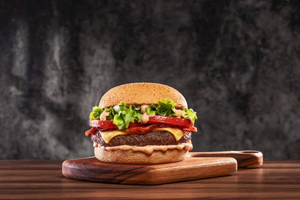

Burger

Description
The best burger recipe, inspired by french best cookers!
Delicious but cheap and easy to make
Ingredients
- Steack
- Bacon
- Cheddar
- Buns
- Eggs
- Oil
- Salt
- Pepper
Steps
- Cook the steak with a little oil and salt. Pepper it.
- While cooking, prepare the sauce by adding oil to the salted egg yolk and scrambling
- When the steak is ready, poor the bacon into the pan with a little water
- Cut cheddar slices, add the sauce to our buns
- Finally, add your steak and the crispy bacon, and enjoy!